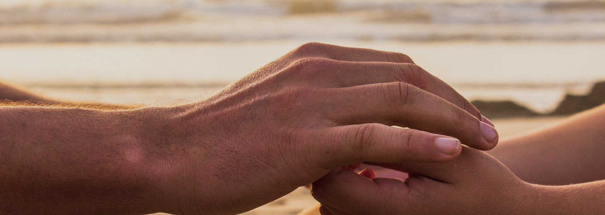
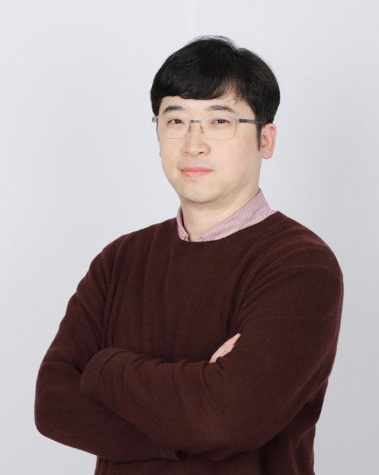

치료진
안정된 서비스를
믿을 만한 전문 의료진이 제공합니다.
전문화된 치료 서비스를 시지 율에서 누리세요.

성상율 대표 원장
학력 및 경력
대동병원 과장 및 부원장 (2012~2021)
대동 wee센터 센터장
대동병원 병원학교장
칠곡 혜원성모병원 진료부장 (2008~2012)
대구시립희망원 정신과장
대구가톨릭대학교 정신과 전문의 수료
대구시교육청지정 교원심리상담소 센터장
대구시교육청지정 학교폭력피해학생학부모지원전담기관 센터장
대구가톨릭의과대학 정신의학과 외래교수
경상북도 청도 정신보건 심판위원
한국명상심리상담연구원 MSC 지도자(trained teacher)
대동병원 불안장애그룹/성인아이그룹/명상그룹 팀장
대한불안장애학회 심층치료과정 수료
일본 큐슈 (노조에 종합정신병원) 연수
메타아카데미 인지행동치료 전문가 과정 수료
일본 큐슈집단요법학회 <불안장애 그룹치료> 발표
대한신경정신의학회 춘계학술대회 <불안장애 그룹치료> 발표
일본 큐슈집단요법학회 <성인아이 그룹치료> 발표
대한신경정신의학회 정회원
대한소아청소년 정신의학회 평생회원
대한노인정신의학회 세부인증의 및 정회원
대한명상의학회 평생회원